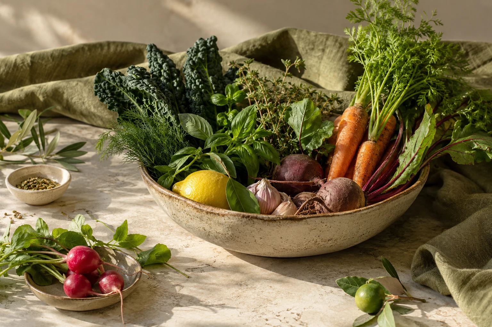

Consultas nutricionais
Um espaço para conversar sobre alimentação, rotina e aquilo que você gostaria de alcançar.
CUIDADO INDIVIDUALNutrição · Confisco
Transforme dúvidas e objetivos em próximos passos com orientação nutricional. Comece contando o que deseja mudar e o que funciona no seu dia a dia.

03 · SOBRE O PROFISSIONAL
Um acompanhamento começa pelo que é importante para você.
Hábitos não mudam de uma hora para outra. Na Raiz do Nutrir, você pode conversar sobre alimentação, rotina e objetivos para entender como dar passos possíveis com orientação profissional.
Antes de escolher, conheça também as avaliações públicas no Google: nota 5,0 em 83 avaliações. Converse com a equipe sobre a sua necessidade.
04 · COMO PODEMOS AJUDAR
Consultas nutricionais para falar de metas, dúvidas e escolhas que possam caber no seu dia a dia.
Um espaço para conversar sobre alimentação, rotina e aquilo que você gostaria de alcançar.
CUIDADO INDIVIDUALDefina com a nutricionista metas que respeitem seu momento e sua realidade.
ORIENTAÇÃO PROFISSIONALTraga suas perguntas e receba orientação adequada ao seu contexto.
PARA A SUA ROTINAConverse sobre a frequência e o formato que podem ajudar você a seguir com consistência.
FALE CONOSCO05 · BENEFÍCIOS PARA VOCÊ
Conheça opções de acompanhamento alinhadas aos seus objetivos e à sua rotina.
Converse sobre sua rotina alimentar, suas dúvidas e as mudanças que gostaria de fazer.
Nota 5,0 em 83 avaliações no Google. Leia os relatos ao considerar suas opções.
Consulte as condições de acolhimento e acessibilidade para planejar sua consulta.
06 · COMO COMEÇAR
Uma conversa ajuda a entender as opções e escolher o próximo passo para você.
Conte sobre sua rotina, suas dúvidas e o que deseja mudar.
Converse sobre a consulta, orientações, formato e valores.
Escolha um momento para começar com acompanhamento profissional.
07 · PERTO DE VOCÊ
Visite o atendimento em Confisco, Belo Horizonte. Consulte a rota e confirme o melhor horário antes de sair.
R. Aracy Guimarães Rosa, 199 - Confisco, Belo Horizonte - MG, 31360-460, BrasilVer rota no Google Maps08 · DÚVIDAS FREQUENTES
Não é necessário criar um plano por conta própria. Pergunte à nutricionista o que levar e como se preparar.
Converse sobre preferências, horários e objetivos para entender como as orientações são definidas.
Ligue para consultar valores, duração e opções de acompanhamento.
Entre em contato para verificar a agenda e escolher um horário.
09 · FALE CONOSCO
Ligue para conhecer as consultas nutricionais da Raiz do Nutrir, consultar valores e encontrar um horário.